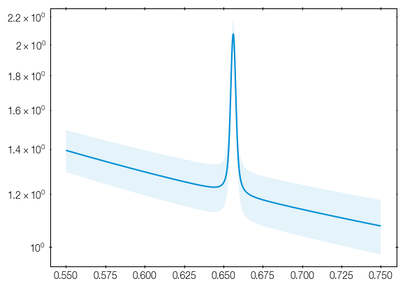
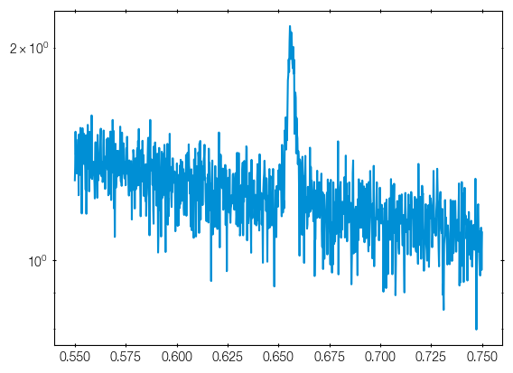
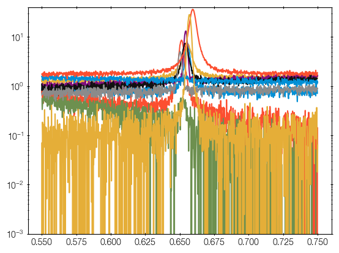
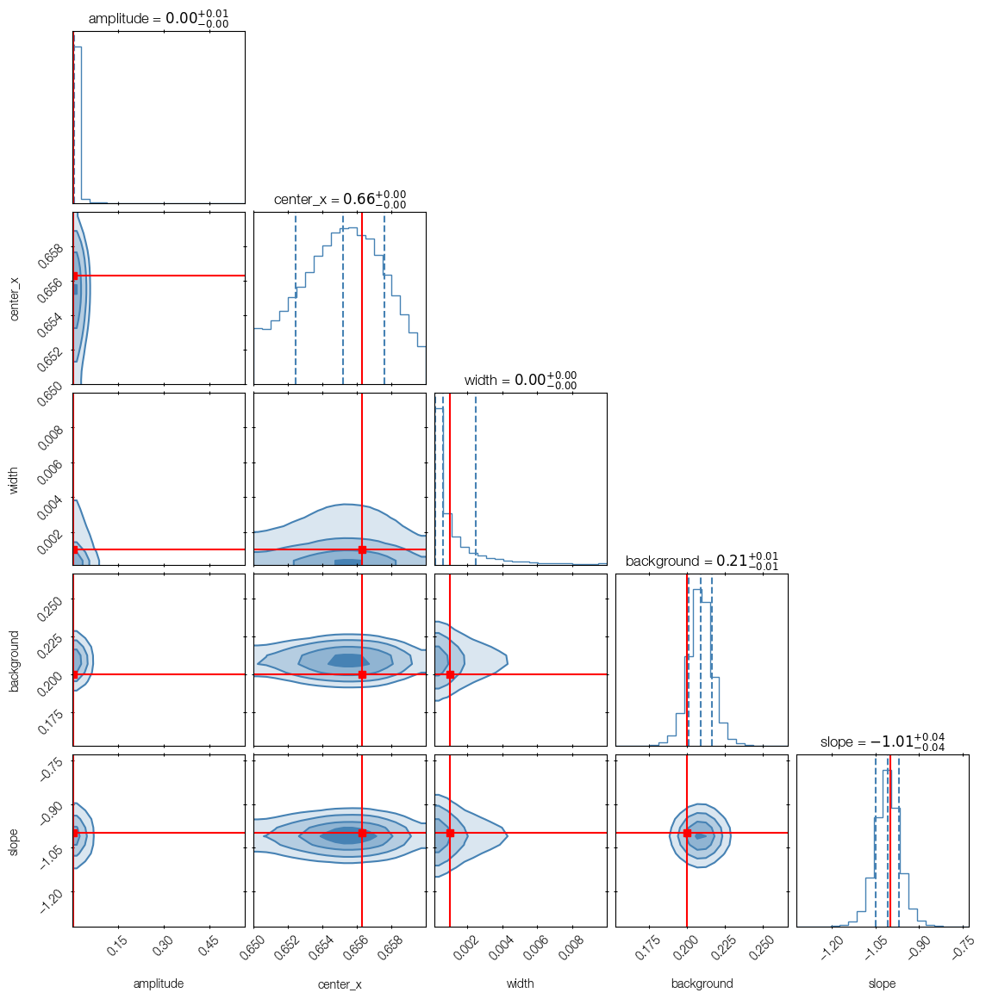
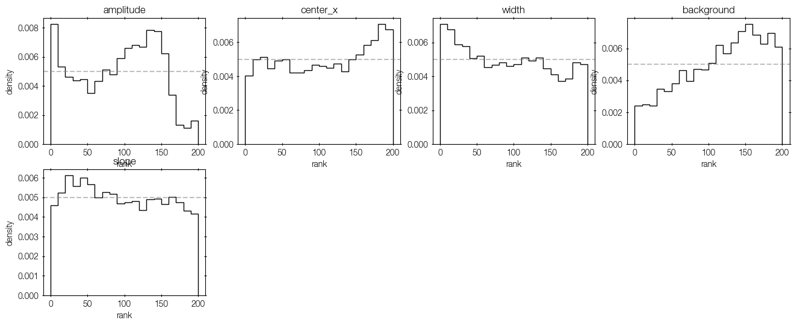
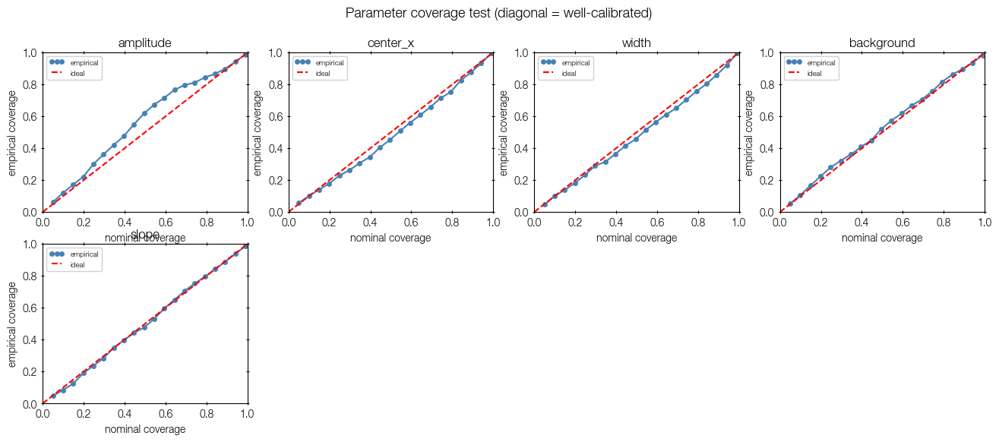
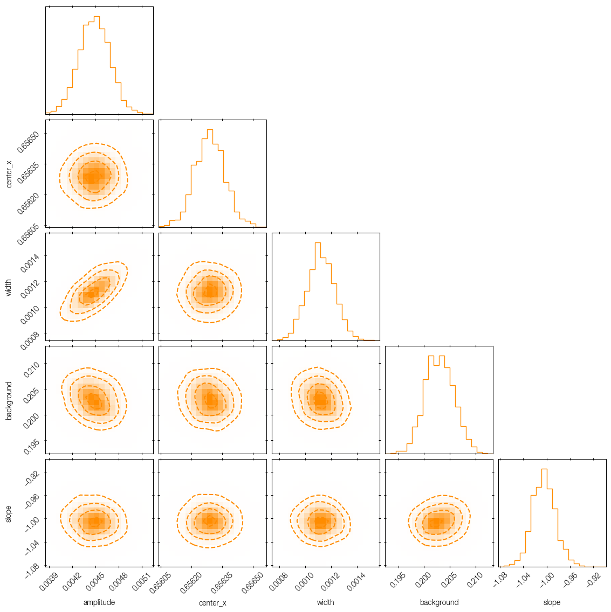
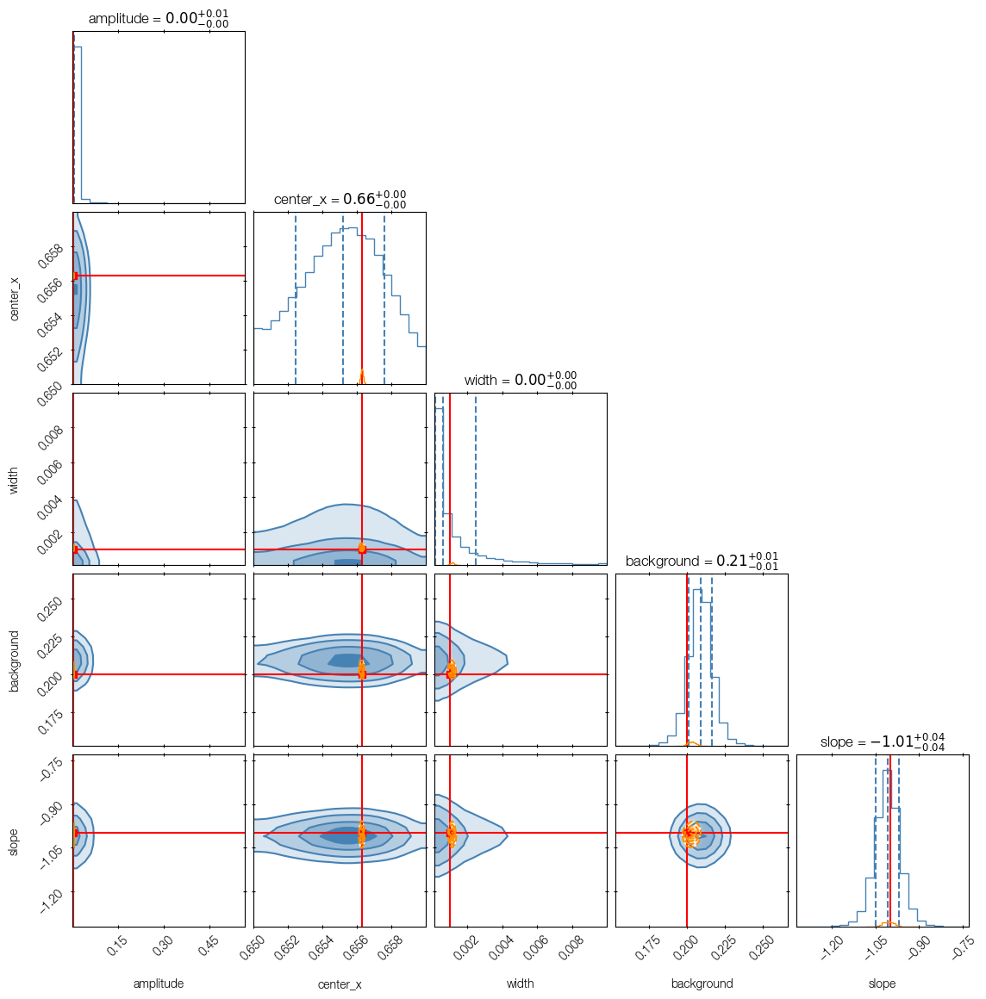

Tutorial: accelerating ultranest with simulation-based inference (SBI)
In this tutorial you will learn:
How to specify a mock data generator in addition to the likelihood
How to train a simulation-based inference model to predict a posterior distribution (neural posterior estimation)
How to verify that the simulation-based inference trained well
How to use SBI-NPE to accelerate the UltraNest nested sampling run
In this example, we fit a Voigt line in a spectrum.
[1]:
import numpy as np
import matplotlib.pyplot as plt
import corner
import ultranest
import ultranest.simbase.minisbi
rng = np.random.default_rng(123)
Defining the model
Gaussian measurement noise
First, we need our physical model function of the intrinsic spectrum, and also predict the noise level. We assume a Voigt line shape and constant noise.
[2]:
noise_std = 0.1
[3]:
N_DATA = 1000
x = np.geomspace(0.55, 0.75, N_DATA)
[4]:
parameter_names = ["amplitude", "center_x", "width", "background", "slope"]
N_PARAMS = len(parameter_names)
Define the model spectrum function, given model parameters
[5]:
from scipy.special import voigt_profile
[6]:
sigma_instrumental = 0.001 # nominal resolution of the spectrograph
[41]:
def generate_mean_and_noise(theta, idx=0, seed=0):
amplitude, center_x, width, background, slope = theta
signal = amplitude * voigt_profile(x - center_x, sigma_instrumental, width) + background + (x / center_x) ** slope
return {
'mean': signal,
'noise_std': signal * 0 + noise_std, # same noise for each data point
}
The history saving thread hit an unexpected error (OperationalError('attempt to write a readonly database')).History will not be written to the database.
The received idx and seed are not used here. They are integers, in case randomness in the physics model is needed.
Our true parameters for this example:
[8]:
theta_true = [0.0042, 0.656279, 0.001, 0.2, -1.]
[9]:
plt.errorbar(
x=x,
y=generate_mean_and_noise(theta_true)['mean'],
capsize=0,
)
plt.fill_between(
x,
generate_mean_and_noise(theta_true)['mean'] - generate_mean_and_noise(theta_true)['noise_std'],
generate_mean_and_noise(theta_true)['mean'] + generate_mean_and_noise(theta_true)['noise_std'],
alpha=0.1,
)
plt.yscale('log');

A beautiful spectrum of a line, on top of a slightly sloped continuum.
Prior distribution
Define our prior distribution as usual, based on unit cube transforms.
[10]:
def prior_transform(u):
result = u.copy()
# amplitude (index 0): log-uniform [1e-2, 1e2]
result[0] = 10**(-4 + u[0] * 4)
# center_x (index 1): uniform [0.65, 0.66]
result[1] = 0.65 + u[1] * 0.01
# width (index 2): uniform [1e-4, 0.01]
result[2] = 10**(-4 + 2 * u[2])
# background level (index 3): uniform [-1, 1]
result[3] = -1 + 2 * u[3]
# slope (index 4): uniform [-2, +2]
result[4] = -2 + 4 * u[4]
return result
Generate noisy data
The observed data we will fit
Going from the model above to data is trivial, with a Gaussian random number generator:
[11]:
def inject_noise(mean_props, rng):
return rng.normal(mean_props['mean'], mean_props['noise_std'])
[12]:
obs_spectrum = inject_noise(generate_mean_and_noise(theta_true), rng)
plt.plot(x, obs_spectrum)
plt.yscale('log')

Generate mock data - Prior predictive checks
Here are some example data sets when we sampled from the prior. These show the diversity of data we consider reasonable a priori:
[13]:
for i in range(10):
u = rng.uniform(size=N_PARAMS)
params = prior_transform(u)
plt.plot(x, inject_noise(generate_mean_and_noise(params), rng))
plt.yscale('log')
plt.ylim(1e-2, 40)

Data likelihood
We adopt a corresponding Gaussian likelihood function, that we will use at the end with ultranest to improve upon the SBI approach.
[14]:
def loglikelihood(mean_props, noisy_data):
# the usual Gaussian likelihood function, comparing data to the model, under noise
return np.sum(
-0.5 * np.log(2.0 * np.pi)
- np.log(mean_props['noise_std'])
- 0.5 * ((noisy_data - mean_props['mean']) / mean_props['noise_std']) ** 2
)
Simulation-based inference
The simulation-based inference trains a neural network to predict a simple factorized posterior distribution on the unit hypercube.
The training pipeline is highly efficient, reusing generated model with different noise.
Sampled datasets will be cached internally to a folder.
[15]:
folder = 'mygaussline'
[16]:
# optional: clear cache whenever you change the prior or model function
!rm -rf mygaussline/
This happens efficiently in batches (using joblib.Memory). Some helper functions that call our functions in a loop:
[17]:
from ultranest.simbase.minisbi.utils import make_memory, make_cached_generate
[18]:
memory = make_memory(folder)
generate_noiseless_batch = make_cached_generate(
memory, prior_transform, generate_mean_and_noise
)
Training the model
Next train a simple neural network to predict a posterior distribution.
[19]:
from ultranest.simbase.minisbi.npe import train_npe
[20]:
model = train_npe(
# our folder
folder=folder,
# our (costly) model function
generate_noiseless_batch=generate_noiseless_batch,
# our cheap noisy generator:
inject_noise=inject_noise,
# our model parameters
n_params=N_PARAMS,
# Parameters related to training strategy:
# seed for randomness
base_seed=12345,
# how long to train: Choose how long you want to wait - the higher the better.
max_model_evals=100000,
# optional: if > 1, evaluate models in parallel (with joblib.Parallel)
num_processes=1,
# the full history of noise-free models generated with generate_mean_and_noise is kept.
# they are reused and additional datasets are generated with fresh noise
# fresh_example_fraction sets the balance between freshly generated models and reuse of previously generated models
# if the model is cheap, can be 1.0.
# Probably should not be much lower than 0.001. -- if the loss becomes extremely small (-300), the network memorized all samples.
fresh_example_fraction=0.01,
# choose how many new samples are generated in each epoch
# this sets the number of model evaluations per epoch
# Note: This sets the batch size seen by the network in each evaluation, by batch_size=fresh_sim_batch_size / fresh_example_fraction - you probably want batch_size of O(1000)
fresh_sim_batch_size=32,
# neural network training is somewhat stochastic and may not give an improvement in each epoch
# set the patience to how many epochs to wait for a significant improvement
# in any case, the best neural network is kept.
patience=10,
# what loss improvement is designated a substantial improvement
patience_min_delta=0.01,
# parameters for the neural network architecture and learning
# learning rate - need to chose this depending on the batch size.
# Increase if loss is changing slowly, decrease if the loss becomes erratic.
# Try 1e-3, 1e-4, etc.
npe_lr=3e-4,
# maximum width of the layers, 1024 is a decent default, but worth trying other values
npe_width=512,
# maximum number of layers. 'cascade' is not very sensitive to this parameter.
npe_depth=6,
# shape:
# - 'rectangular' - a classic MLP where each of the npe_depth layer has npe_width neurons
# - 'triangular' - a funnel-shaped MLP, with each next layer decreasing linearly in width
# - 'cascade' - subsequent layers are half the width, half the neurons are forwarded to the next layer, the other half skip to the final layer.
# 'cascade' is recommended, because it avoids having to play much with npe_width and npe_depth - it contains both a wide and a deep network.
# the neural network layers can be of equal layer width
layer_shape='cascade',
# activation function
npe_activation_cls='ReLU',
)
fresh_example_fraction=0.010 => n_fresh=32, replay_example_count=3168 per sub-batch
Starting parallel simulation generator (3220 batches total, 1 workers) …
Detected n_data=1000 from probe simulation.
hidden layer widths: [512, 256, 128, 64, 32, 16]
Training NPE (product of Kumaraswamy-Logistic distributions) with on-the-fly batch generation …
Computing normalisation statistics …
[ZScoreNorm] fitted 1000 features from 2000 samples.
mean : min=1.023231 max=10.345800
std : min=0.592311 max=27.783062
Input normalisation fitted.
Generating fixed NPE validation set (val_size=1024) …
Training NPE with on-the-fly batch generation …
Epoch 1/390 train_loss=-1.1824 val_loss=-1.5215 fresh_simulator_evals=256 *
Epoch 2/390 train_loss=-2.1619 val_loss=-2.2636 fresh_simulator_evals=512 *
Epoch 3/390 train_loss=-2.7500 val_loss=-2.5668 fresh_simulator_evals=768 *
Epoch 4/390 train_loss=-2.9596 val_loss=-2.7459 fresh_simulator_evals=1024 *
Epoch 5/390 train_loss=-3.1445 val_loss=-3.0155 fresh_simulator_evals=1280 *
Epoch 6/390 train_loss=-3.3398 val_loss=-3.1661 fresh_simulator_evals=1536 *
Epoch 7/390 train_loss=-3.3814 val_loss=-3.3001 fresh_simulator_evals=1792 *
Epoch 8/390 train_loss=-3.5650 val_loss=-3.4544 fresh_simulator_evals=2048 *
Epoch 9/390 train_loss=-3.7571 val_loss=-3.6822 fresh_simulator_evals=2304 *
Epoch 10/390 train_loss=-3.9480 val_loss=-3.8550 fresh_simulator_evals=2560 *
Epoch 11/390 train_loss=-4.0946 val_loss=-4.0678 fresh_simulator_evals=2816 *
Epoch 12/390 train_loss=-4.4430 val_loss=-4.4662 fresh_simulator_evals=3072 *
Epoch 13/390 train_loss=-4.7013 val_loss=-4.4537 fresh_simulator_evals=3328 [1/10]
Epoch 14/390 train_loss=-4.4052 val_loss=-4.3293 fresh_simulator_evals=3584 [2/10]
Epoch 15/390 train_loss=-4.7639 val_loss=-4.5164 fresh_simulator_evals=3840 *
Epoch 16/390 train_loss=-4.9731 val_loss=-5.0957 fresh_simulator_evals=4096 *
Epoch 17/390 train_loss=-5.2496 val_loss=-5.1886 fresh_simulator_evals=4352 *
Epoch 18/390 train_loss=-5.3717 val_loss=-5.0348 fresh_simulator_evals=4608 [1/10]
Epoch 19/390 train_loss=-5.3180 val_loss=-5.5241 fresh_simulator_evals=4864 *
Epoch 20/390 train_loss=-5.6100 val_loss=-5.4879 fresh_simulator_evals=5120 [1/10]
Epoch 21/390 train_loss=-5.7231 val_loss=-5.8019 fresh_simulator_evals=5376 *
Epoch 22/390 train_loss=-5.8253 val_loss=-5.4744 fresh_simulator_evals=5632 [1/10]
Epoch 23/390 train_loss=-5.7035 val_loss=-5.7576 fresh_simulator_evals=5888 [2/10]
Epoch 24/390 train_loss=-5.8906 val_loss=-5.8598 fresh_simulator_evals=6144 *
Epoch 25/390 train_loss=-6.0099 val_loss=-5.9380 fresh_simulator_evals=6400 *
Epoch 26/390 train_loss=-6.2056 val_loss=-6.1041 fresh_simulator_evals=6656 *
Epoch 27/390 train_loss=-6.2511 val_loss=-6.2401 fresh_simulator_evals=6912 *
Epoch 28/390 train_loss=-6.4188 val_loss=-6.4645 fresh_simulator_evals=7168 *
Epoch 29/390 train_loss=-6.4619 val_loss=-6.5352 fresh_simulator_evals=7424 *
Epoch 30/390 train_loss=-6.6333 val_loss=-6.6363 fresh_simulator_evals=7680 *
Epoch 31/390 train_loss=-6.2840 val_loss=-6.4590 fresh_simulator_evals=7936 [1/10]
Epoch 32/390 train_loss=-6.3664 val_loss=-5.3450 fresh_simulator_evals=8192 [2/10]
Epoch 33/390 train_loss=-6.2875 val_loss=-6.2491 fresh_simulator_evals=8448 [3/10]
Epoch 34/390 train_loss=-6.5201 val_loss=-6.6803 fresh_simulator_evals=8704 *
Epoch 35/390 train_loss=-6.8162 val_loss=-6.8269 fresh_simulator_evals=8960 *
Epoch 36/390 train_loss=-6.9782 val_loss=-6.6361 fresh_simulator_evals=9216 [1/10]
Epoch 37/390 train_loss=-6.8937 val_loss=-7.0251 fresh_simulator_evals=9472 *
Epoch 38/390 train_loss=-7.0086 val_loss=-6.8340 fresh_simulator_evals=9728 [1/10]
Epoch 39/390 train_loss=-7.0177 val_loss=-7.0898 fresh_simulator_evals=9984 *
Epoch 40/390 train_loss=-7.2390 val_loss=-6.6979 fresh_simulator_evals=10240 [1/10]
Epoch 41/390 train_loss=-6.9965 val_loss=-7.0602 fresh_simulator_evals=10496 [2/10]
Epoch 42/390 train_loss=-7.1822 val_loss=-7.3056 fresh_simulator_evals=10752 *
Epoch 43/390 train_loss=-7.3218 val_loss=-7.2027 fresh_simulator_evals=11008 [1/10]
Epoch 44/390 train_loss=-7.2912 val_loss=-7.3787 fresh_simulator_evals=11264 *
Epoch 45/390 train_loss=-7.5102 val_loss=-7.4440 fresh_simulator_evals=11520 *
Epoch 46/390 train_loss=-7.5430 val_loss=-7.5467 fresh_simulator_evals=11776 *
Epoch 47/390 train_loss=-7.5387 val_loss=-7.4913 fresh_simulator_evals=12032 [1/10]
Epoch 48/390 train_loss=-7.5705 val_loss=-6.9858 fresh_simulator_evals=12288 [2/10]
Epoch 49/390 train_loss=-7.5856 val_loss=-7.7069 fresh_simulator_evals=12544 *
Epoch 50/390 train_loss=-7.5510 val_loss=-7.5185 fresh_simulator_evals=12800 [1/10]
Epoch 51/390 train_loss=-7.7290 val_loss=-7.7755 fresh_simulator_evals=13056 *
Epoch 52/390 train_loss=-7.8358 val_loss=-7.4229 fresh_simulator_evals=13312 [1/10]
Epoch 53/390 train_loss=-7.8508 val_loss=-7.9762 fresh_simulator_evals=13568 *
Epoch 54/390 train_loss=-7.9421 val_loss=-8.0076 fresh_simulator_evals=13824 *
Epoch 55/390 train_loss=-8.0458 val_loss=-7.9717 fresh_simulator_evals=14080 [1/10]
Epoch 56/390 train_loss=-8.0886 val_loss=-7.9996 fresh_simulator_evals=14336 [2/10]
Epoch 57/390 train_loss=-7.9854 val_loss=-8.1305 fresh_simulator_evals=14592 *
Epoch 58/390 train_loss=-8.0267 val_loss=-8.0634 fresh_simulator_evals=14848 [1/10]
Epoch 59/390 train_loss=-8.1223 val_loss=-8.1795 fresh_simulator_evals=15104 *
Epoch 60/390 train_loss=-8.1029 val_loss=-8.1498 fresh_simulator_evals=15360 [1/10]
Epoch 61/390 train_loss=-8.2757 val_loss=-8.0809 fresh_simulator_evals=15616 [2/10]
Epoch 62/390 train_loss=-8.3324 val_loss=-8.3455 fresh_simulator_evals=15872 *
Epoch 63/390 train_loss=-8.4289 val_loss=-8.3988 fresh_simulator_evals=16128 *
Epoch 64/390 train_loss=-8.4218 val_loss=-8.2137 fresh_simulator_evals=16384 [1/10]
Epoch 65/390 train_loss=-8.4220 val_loss=-8.3466 fresh_simulator_evals=16640 [2/10]
Epoch 66/390 train_loss=-8.3541 val_loss=-7.9892 fresh_simulator_evals=16896 [3/10]
Epoch 67/390 train_loss=-8.4097 val_loss=-8.5070 fresh_simulator_evals=17152 *
Epoch 68/390 train_loss=-8.4102 val_loss=-8.3823 fresh_simulator_evals=17408 [1/10]
Epoch 69/390 train_loss=-8.4946 val_loss=-8.5039 fresh_simulator_evals=17664 [2/10]
Epoch 70/390 train_loss=-8.4990 val_loss=-8.3605 fresh_simulator_evals=17920 [3/10]
Epoch 71/390 train_loss=-8.5852 val_loss=-8.5295 fresh_simulator_evals=18176 *
Epoch 72/390 train_loss=-8.6014 val_loss=-8.6350 fresh_simulator_evals=18432 *
Epoch 73/390 train_loss=-8.6407 val_loss=-8.7068 fresh_simulator_evals=18688 *
Epoch 74/390 train_loss=-8.8813 val_loss=-8.7546 fresh_simulator_evals=18944 *
Epoch 75/390 train_loss=-8.7245 val_loss=-8.9182 fresh_simulator_evals=19200 *
Epoch 76/390 train_loss=-8.7031 val_loss=-8.7492 fresh_simulator_evals=19456 [1/10]
Epoch 77/390 train_loss=-8.7990 val_loss=-8.6333 fresh_simulator_evals=19712 [2/10]
Epoch 78/390 train_loss=-8.6591 val_loss=-8.7141 fresh_simulator_evals=19968 [3/10]
Epoch 79/390 train_loss=-8.8455 val_loss=-8.6000 fresh_simulator_evals=20224 [4/10]
Epoch 80/390 train_loss=-8.7797 val_loss=-8.8498 fresh_simulator_evals=20480 [5/10]
Epoch 81/390 train_loss=-8.9755 val_loss=-8.6884 fresh_simulator_evals=20736 [6/10]
Epoch 82/390 train_loss=-8.8504 val_loss=-9.0702 fresh_simulator_evals=20992 *
Epoch 83/390 train_loss=-8.8859 val_loss=-8.8619 fresh_simulator_evals=21248 [1/10]
Epoch 84/390 train_loss=-9.0215 val_loss=-9.0182 fresh_simulator_evals=21504 [2/10]
Epoch 85/390 train_loss=-9.1999 val_loss=-9.0823 fresh_simulator_evals=21760 *
Epoch 86/390 train_loss=-9.0956 val_loss=-9.0106 fresh_simulator_evals=22016 [1/10]
Epoch 87/390 train_loss=-9.0748 val_loss=-9.0975 fresh_simulator_evals=22272 *
Epoch 88/390 train_loss=-9.2796 val_loss=-9.1154 fresh_simulator_evals=22528 *
Epoch 89/390 train_loss=-9.2436 val_loss=-9.3586 fresh_simulator_evals=22784 *
Epoch 90/390 train_loss=-9.0654 val_loss=-8.8461 fresh_simulator_evals=23040 [1/10]
Epoch 91/390 train_loss=-9.1024 val_loss=-9.2741 fresh_simulator_evals=23296 [2/10]
Epoch 92/390 train_loss=-9.0949 val_loss=-8.7865 fresh_simulator_evals=23552 [3/10]
Epoch 93/390 train_loss=-9.0222 val_loss=-9.1895 fresh_simulator_evals=23808 [4/10]
Epoch 94/390 train_loss=-9.3750 val_loss=-9.4074 fresh_simulator_evals=24064 *
Epoch 95/390 train_loss=-9.3168 val_loss=-9.2018 fresh_simulator_evals=24320 [1/10]
Epoch 96/390 train_loss=-9.3180 val_loss=-9.3602 fresh_simulator_evals=24576 [2/10]
Epoch 97/390 train_loss=-9.2771 val_loss=-9.4691 fresh_simulator_evals=24832 *
Epoch 98/390 train_loss=-9.3937 val_loss=-9.3630 fresh_simulator_evals=25088 [1/10]
Epoch 99/390 train_loss=-9.3719 val_loss=-9.2279 fresh_simulator_evals=25344 [2/10]
Epoch 100/390 train_loss=-9.5691 val_loss=-9.5218 fresh_simulator_evals=25600 *
Epoch 101/390 train_loss=-9.3715 val_loss=-8.8785 fresh_simulator_evals=25856 [1/10]
Epoch 102/390 train_loss=-9.0237 val_loss=-9.2981 fresh_simulator_evals=26112 [2/10]
Epoch 103/390 train_loss=-9.3969 val_loss=-9.4978 fresh_simulator_evals=26368 [3/10]
Epoch 104/390 train_loss=-9.4477 val_loss=-9.3574 fresh_simulator_evals=26624 [4/10]
Epoch 105/390 train_loss=-9.3613 val_loss=-9.2077 fresh_simulator_evals=26880 [5/10]
Epoch 106/390 train_loss=-9.3687 val_loss=-9.4166 fresh_simulator_evals=27136 [6/10]
Epoch 107/390 train_loss=-9.4852 val_loss=-9.5029 fresh_simulator_evals=27392 [7/10]
Epoch 108/390 train_loss=-9.5522 val_loss=-9.6878 fresh_simulator_evals=27648 *
Epoch 109/390 train_loss=-9.5165 val_loss=-9.5614 fresh_simulator_evals=27904 [1/10]
Epoch 110/390 train_loss=-9.6966 val_loss=-9.8584 fresh_simulator_evals=28160 *
Epoch 111/390 train_loss=-9.7912 val_loss=-9.9229 fresh_simulator_evals=28416 *
Epoch 112/390 train_loss=-9.9440 val_loss=-10.0001 fresh_simulator_evals=28672 *
Epoch 113/390 train_loss=-10.0365 val_loss=-9.6519 fresh_simulator_evals=28928 [1/10]
Epoch 114/390 train_loss=-9.6198 val_loss=-9.7274 fresh_simulator_evals=29184 [2/10]
Epoch 115/390 train_loss=-9.7233 val_loss=-9.4136 fresh_simulator_evals=29440 [3/10]
Epoch 116/390 train_loss=-9.5456 val_loss=-9.7460 fresh_simulator_evals=29696 [4/10]
Epoch 117/390 train_loss=-9.7430 val_loss=-10.0080 fresh_simulator_evals=29952 [5/10]
Epoch 118/390 train_loss=-9.8239 val_loss=-9.9752 fresh_simulator_evals=30208 [6/10]
Epoch 119/390 train_loss=-9.9655 val_loss=-9.8601 fresh_simulator_evals=30464 [7/10]
Epoch 120/390 train_loss=-9.8946 val_loss=-9.6582 fresh_simulator_evals=30720 [8/10]
Epoch 121/390 train_loss=-9.8784 val_loss=-9.7794 fresh_simulator_evals=30976 [9/10]
Epoch 122/390 train_loss=-9.9555 val_loss=-10.0423 fresh_simulator_evals=31232 *
Epoch 123/390 train_loss=-10.0998 val_loss=-10.2438 fresh_simulator_evals=31488 *
Epoch 124/390 train_loss=-9.9479 val_loss=-9.9550 fresh_simulator_evals=31744 [1/10]
Epoch 125/390 train_loss=-9.9019 val_loss=-9.7953 fresh_simulator_evals=32000 [2/10]
Epoch 126/390 train_loss=-9.8589 val_loss=-9.6023 fresh_simulator_evals=32256 [3/10]
Epoch 127/390 train_loss=-9.8262 val_loss=-9.9474 fresh_simulator_evals=32512 [4/10]
Epoch 128/390 train_loss=-9.9531 val_loss=-10.1601 fresh_simulator_evals=32768 [5/10]
Epoch 129/390 train_loss=-10.1444 val_loss=-10.2197 fresh_simulator_evals=33024 [6/10]
Epoch 130/390 train_loss=-10.0982 val_loss=-9.7880 fresh_simulator_evals=33280 [7/10]
Epoch 131/390 train_loss=-9.9798 val_loss=-10.0928 fresh_simulator_evals=33536 [8/10]
Epoch 132/390 train_loss=-10.0650 val_loss=-10.1281 fresh_simulator_evals=33792 [9/10]
Epoch 133/390 train_loss=-10.0780 val_loss=-10.0381 fresh_simulator_evals=34048 [10/10]
Early stopping at epoch 133 (patience=10, fresh_simulator_evals=34048)
Restored best model (val_loss=-10.2438)
Model saved to mygaussline/minisbi_npe_1000d_512_512_512_512_512_512_ReLU_KLP_cascade.pt
The meaning of the training output is as follows:
The loss is the log-density of the predicted posterior distribution at the true parameter values.
The training loss is what the optimizer sees. Ideally, this should not stall.
The validation loss is the posterior density of independent samples generated at the beginning and kept separate. These mock data and their true parameters are not seen by the training and kept fixed. The validation loss should keep improving (decreasing).
The fresh_simulator_evals gives the number of model calls performed so far.
The last column gives a star when the model is improving, and otherwise counting up until patience epochs give no improvements.
At the end, the best model is kept.
SBI-NPE posterior distribution
The neural posterior may loose a lot of information, may be biased, etc. We will check this below.
But let’s apply the neural model to our data and see what we get:
[21]:
from ultranest.simbase.minisbi.npe import sample_posterior
posterior_samples_u, posterior_samples_theta = sample_posterior(
model=model,
observed_data=obs_spectrum,
prior_transform=prior_transform,
n_params=N_PARAMS,
n_posterior_samples=100000,
)
Predicted posterior (Kumaraswamy-Logistic product, unit-cube space):
Param 0: loc=0.9677 scale=0.2043 a=1.0741 b=0.2385
Param 1: loc=0.2767 scale=0.0919 a=1.3752 b=3.7631
Param 2: loc=0.1950 scale=0.0941 a=1.5721 b=5.2342
Param 3: loc=0.5873 scale=0.0044 a=0.2282 b=0.4277
Param 4: loc=0.3659 scale=0.0136 a=0.4344 b=0.2741
/home/user/Downloads/mininest/ultranest/simbase/minisbi/logistic.py:37: RuntimeWarning: overflow encountered in exp
return 1.0 / (1.0 + np.exp(-np.clip(x, -500.0, 500.0)))
[22]:
print("Posterior summary:")
for i, name in enumerate(parameter_names):
samp = posterior_samples_theta[:, i]
print(f" {name:12s}: mean={samp.mean():.3f} std={samp.std():.3f}"
f" true={theta_true[i]:.3f}")
Posterior summary:
amplitude : mean=0.006 std=0.018 true=0.004
center_x : mean=0.655 std=0.002 true=0.656
width : mean=0.001 std=0.002 true=0.001
background : mean=0.209 std=0.008 true=0.200
slope : mean=-1.009 std=0.044 true=-1.000
[23]:
corner.corner(
posterior_samples_theta,
labels=parameter_names,
truths=theta_true,
truth_color="red",
show_titles=True,
quantiles=[0.16, 0.5, 0.84],
color="steelblue",
plot_datapoints=False,
fill_contours=True,
smooth=1.0,
);

Getting the NPE distribution parameters
The above is a Kumaraswamy-Logistic chained distribution defined on the unit hypercube. It can be summarized with a few distribution parameters for each model parameters.
[24]:
from ultranest.simbase.minisbi.nested import get_distribution_parameters, KLPTransform
[25]:
distribution_parameters = get_distribution_parameters(model, obs_spectrum)
[26]:
distribution_parameters
[26]:
{'loc': [0.9677473306655884,
0.27672627568244934,
0.19500614702701569,
0.5872949957847595,
0.3659431040287018],
'scale': [0.2043338119983673,
0.09192689508199692,
0.09408794343471527,
0.004435378592461348,
0.013627054169774055],
'a': [1.0740731954574585,
1.3751872777938843,
1.5721242427825928,
0.22820907831192017,
0.43438252806663513],
'b': [0.2384941726922989,
3.7631149291992188,
5.234200954437256,
0.42766571044921875,
0.2740660607814789]}
It might be useful to store for reuse:
[27]:
import json
with open(folder + '/distribution.json', 'w') as f:
json.dump(distribution_parameters, f)
Checking the SBI model: rank histogram
First, we check that the model gives reliable posteriors, with a rank histogram.
We generate from the prior, and sample posterior samples. Ideally, the rank of the prior samples and the rank of the posterior samples are on a line (see Simulation-based calibration paper).
[28]:
from ultranest.simbase.minisbi.plot import rank_histogram
[29]:
ranks, fig, axes = rank_histogram(
model=model,
generate_noiseless_batch=generate_noiseless_batch,
inject_noise=inject_noise,
prior_transform=prior_transform,
n_params=N_PARAMS,
folder=folder,
n_test=5000,
seed=98765,
param_names=parameter_names,
n_bins=20,
)
fig;
Rank histogram: 0%| | 0/5000 [00:00<?, ?sim/s]/home/user/Downloads/mininest/ultranest/simbase/minisbi/logistic.py:37: RuntimeWarning: overflow encountered in exp
return 1.0 / (1.0 + np.exp(-np.clip(x, -500.0, 500.0)))
Rank histogram: 100%|█████████████████████████████████████████████████████████████| 5000/5000 [00:00<00:00, 8801.27sim/s]

These histograms should be flat.
If they a U-shaped, the posterior is over-confident. If they are inverse U-shaped, the posterior is under-confident.
You might be able to improve this by choosing a larger neural network.
[30]:
print(" Per-parameter rank statistics:")
for i, name in enumerate(parameter_names):
print(f" {name:12s}: mean={ranks[:, i].mean():.1f} "
f"std={ranks[:, i].std():.1f} expected_mean=100.0")
Per-parameter rank statistics:
amplitude : mean=91.4 std=52.6 expected_mean=100.0
center_x : mean=105.9 std=59.8 expected_mean=100.0
width : mean=92.2 std=59.1 expected_mean=100.0
background : mean=117.0 std=53.5 expected_mean=100.0
slope : mean=95.6 std=57.3 expected_mean=100.0
Checking the SBI model: coverage test
Next, we check whether the x% credible intervals contain the true value in x% of cases:
[31]:
from ultranest.simbase.minisbi.plot import parameter_coverage_test
[32]:
coverage, fig, axes = parameter_coverage_test(
model=model,
generate_noiseless_batch=generate_noiseless_batch,
inject_noise=inject_noise,
prior_transform=prior_transform,
n_params=N_PARAMS,
folder=folder,
n_test=500,
credible_levels=np.linspace(0.05, 0.99, 20).tolist(),
seed=11223,
param_names=parameter_names,
)
fig;
Coverage test: 100%|████████████████████████████████████████████████████████████████| 500/500 [00:00<00:00, 9391.93sim/s]

These should follow the diagonal (red dashed).
Most of them look good. The amplitude parameter is slightly off, but not too wild.
If not, the posterior for that parameter is not well-calibrated (too narrow or too wide error bars). You might be able to improve this by choosing a larger neural network.
[33]:
print(" Empirical coverage at nominal 90% level:")
levels = np.linspace(0.05, 0.99, 20)
idx_90 = np.argmin(np.abs(levels - 0.90))
for i, name in enumerate(parameter_names):
print(f" {name:12s}: {coverage[idx_90, i]:.3f} (nominal=0.900)")
Empirical coverage at nominal 90% level:
amplitude : 0.898 (nominal=0.900)
center_x : 0.876 (nominal=0.900)
width : 0.860 (nominal=0.900)
background : 0.896 (nominal=0.900)
slope : 0.888 (nominal=0.900)
ultranest-sbi: SBI-accelerated nested sampling
Setting up the accelerated inference
Here we run nested sampling using the NPE posterior as a reparameterisation.
This allows nested sampling to start at a shrunk-down prior. To ensure identical inference as if we had started with the full prior, we need to correct the likelihood function by a penalty.
The nested sampler samples t ~ Uniform(0,1)^d.
The prior transform maps: t -> u -> theta
The log-likelihood includes a correction: loglike(theta) - log q(u | x_obs)
The correction ensures that the evidence integral and posterior samples are correct with respect to the original flat prior over u (and thus the physical prior over theta).
[34]:
# a helper object defining the distribution, its transform and log-posterior
klp_transform = KLPTransform(**distribution_parameters)
[35]:
class _State:
last_t = None
state = _State()
# warp the prior by the NPE distribution
def warped_prior_transform(t):
# keep the last state for likelihood
state.last_t = t.copy()
# [0,1]^d -> [0,1]^d with the SBI posterior warp
u = klp_transform.transform(t).astype(float)
# [0,1]^d -> physical parameters
theta = prior_transform(u)
return theta
# correct the likelihood for the warp
def corrected_log_likelihood(theta):
mp = generate_mean_and_noise(theta=theta, idx=0, seed=0)
# compute our model likelihood
logL = loglikelihood(mp, obs_spectrum)
# compute neural posterior density
log_jac = klp_transform.log_jacobian(state.last_t)
return logL + log_jac
Setting up the accelerated sampler
Build our accelerated ultranest-sbi sampler:
[36]:
sampler = ultranest.ReactiveNestedSampler(
parameter_names,
corrected_log_likelihood,
warped_prior_transform,
log_dir=folder,
resume='overwrite',
)
Torch modified the logging to show all messages, let’s suppress that
[37]:
import logging
logger = logging.getLogger('ultranest')
logger.setLevel(logging.ERROR)
#logging.basicConfig(level=logging.INFO, stream=sys.stderr)
Run the accelerated ultranest-sbi sampler
[38]:
results = sampler.run(frac_remain=0.5, max_num_improvement_loops=0)
Z=876.1(49.51%) | Like=887.41..889.19 [887.4075..887.4086]*| it/evals=4800/13265 eff=37.3105% N=400 00
Posterior distribution:
Looking at the posterior distribution of the ultranest-sbi sampler, it is much narrower than the SBI one:
[39]:
corner.corner(
results['samples'],
labels=parameter_names,
color="darkorange",
plot_datapoints=False,
fill_contours=False,
smooth=1.0,
contour_kwargs={"linestyles": "dashed"},
);

Combined posterior distribution
Comparing them on the same plot, the SBI posterior is extremely wide, while ultranest manages to zoom in and get the full information.
[40]:
figure = corner.corner(
posterior_samples_theta,
labels=parameter_names,
truths=theta_true,
truth_color="red",
show_titles=True,
quantiles=[0.16, 0.5, 0.84],
color="steelblue",
plot_datapoints=False,
fill_contours=True,
smooth=1.0,
)
# overplot nested sampling posterior on the same figure
corner.corner(
results['samples'],
labels=parameter_names,
fig=figure,
color="darkorange",
plot_datapoints=False,
fill_contours=False,
smooth=1.0,
contour_kwargs={"linestyles": "dashed"},
);

Notice that the ultranest-sbi posterior (orange) is much narrower than the SBI posterior (blue), because SBI lost a lot of information. Nevertheless, the blue distribution provides a useful starting point for nested sampling.
Takeaways
In addition to the usual model and its likelihood, we defined a data simulator that can generate data.
We have learned to train a simulation-based inference (SBI) neural posterior estimator (NPE) model for obtaining a fast posterior distribution.
We checked that SBI posterior is amortized to behave well across the entire prior.
We used the SBI posterior on our data to get a starting point for a posterior distribution. This distribution has lost some information.
We used ultranest on top of the SBI posterior to get the posterior samples from the true posterior.
This ultranest-sbi approach effectively “skips” many initial nested sampling iterations, zooming into a data-driven guess for the posterior location. Because the SBI posterior is virtually always too wide, nested sampling is then fast to integrate to the actual posterior bulk.
Limitations: The posterior distribution used by the neural network is factorized and not optimal for challenging distributions. With a different, more sophisticated sbi package, better neural posteriors could be learned, but that would mean more complexity as well.
When using this in publications, please refer to it as ultranest-sbi, to distinguish it from ultranest.
https://arxiv.org/abs/1804.06788, “Validating Bayesian Inference Algorithms with Simulation-Based Calibration”, Talts e al., 2018
https://doi.org/10.1073/pnas.1912789117 “The frontier of simulation-based inference”, Cranmer, Brehmer, Louppe, 2020